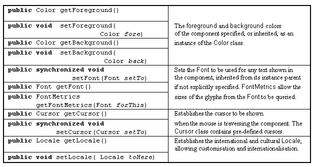

The Component class -
appearance actions

The Colour of an artefact can be specified by using the setForeground()
and SetBackground() actions of its top level window. These attributes
will be inherited by most, but not all, of its instance children.
For the ClickCounter example the settings were:
this.setForeground( Color.blue);
this.setBackground( Color.yellow);
Colour names declared as manifest values in the Color class include:
black, white, red, black, blue, cyan, darkGray, gray, lightGray,
magenta, orange, pink, yellow.
The font can likewise be set using the setFont() action:
this.setFont( new Font( "times", FONT.BOLD, 24 ));
Possible font names include TimesRoman, Helvetica and Courier,
styles include Font.PLAIN, Font.ITALIC, Font.BOLD.
The last argument is the size of the font.